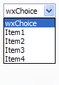

| Version: 2.9.4 |
#include </home/zeitlin/src/wx/github/interface/wx/choice.h>
 Inheritance diagram for wxChoice:
Inheritance diagram for wxChoice:A choice item is used to select one of a list of strings.
Unlike a wxListBox, only the selection is visible until the user pulls down the menu of choices.
This class supports the following styles:
The following event handler macros redirect the events to member function handlers 'func' with prototypes like:
Event macros for events emitted by this class:
wxEVT_COMMAND_CHOICE_SELECTED event, when an item on the list is selected. |  |  |  |
| wxMSW appearance | wxGTK appearance | wxMac appearance |
Public Member Functions | |
| wxChoice () | |
| Default constructor. | |
| wxChoice (wxWindow *parent, wxWindowID id, const wxPoint &pos=wxDefaultPosition, const wxSize &size=wxDefaultSize, int n=0, const wxString choices[]=NULL, long style=0, const wxValidator &validator=wxDefaultValidator, const wxString &name=wxChoiceNameStr) | |
| Constructor, creating and showing a choice. | |
| wxChoice (wxWindow *parent, wxWindowID id, const wxPoint &pos, const wxSize &size, const wxArrayString &choices, long style=0, const wxValidator &validator=wxDefaultValidator, const wxString &name=wxChoiceNameStr) | |
| Constructor, creating and showing a choice. | |
| virtual | ~wxChoice () |
| Destructor, destroying the choice item. | |
| virtual int | GetColumns () const |
| Gets the number of columns in this choice item. | |
| virtual int | GetCurrentSelection () const |
| Unlike wxControlWithItems::GetSelection() which only returns the accepted selection value, i.e. | |
| virtual void | SetColumns (int n=1) |
| Sets the number of columns in this choice item. | |
| virtual bool | IsSorted () const |
| virtual unsigned int | GetCount () const |
| Returns the number of items in the control. | |
| virtual int | GetSelection () const |
Returns the index of the selected item or wxNOT_FOUND if no item is selected. | |
| virtual void | SetSelection (int n) |
Sets the selection to the given item n or removes the selection entirely if n == wxNOT_FOUND. | |
| virtual int | FindString (const wxString &s, bool bCase=false) const |
| Finds an item whose label matches the given string. | |
| virtual wxString | GetString (unsigned int n) const |
| Returns the label of the item with the given index. | |
| virtual void | SetString (unsigned int pos, const wxString &s) |
| Sets the label for the given item. | |
| bool | Create (wxWindow *parent, wxWindowID id, const wxPoint &pos=wxDefaultPosition, const wxSize &size=wxDefaultSize, int n=0, const wxString choices[]=NULL, long style=0, const wxValidator &validator=wxDefaultValidator, const wxString &name=wxChoiceNameStr) |
| Creates the choice for two-step construction. | |
| bool | Create (wxWindow *parent, wxWindowID id, const wxPoint &pos, const wxSize &size, const wxArrayString &choices, long style=0, const wxValidator &validator=wxDefaultValidator, const wxString &name=wxChoiceNameStr) |
| Creates the choice for two-step construction. | |
| wxChoice::wxChoice | ( | ) |
Default constructor.
| wxChoice::wxChoice | ( | wxWindow * | parent, |
| wxWindowID | id, | ||
| const wxPoint & | pos = wxDefaultPosition, |
||
| const wxSize & | size = wxDefaultSize, |
||
| int | n = 0, |
||
| const wxString | choices[] = NULL, |
||
| long | style = 0, |
||
| const wxValidator & | validator = wxDefaultValidator, |
||
| const wxString & | name = wxChoiceNameStr |
||
| ) |
Constructor, creating and showing a choice.
| parent | Parent window. Must not be NULL. |
| id | Window identifier. The value wxID_ANY indicates a default value. |
| pos | Window position. If wxDefaultPosition is specified then a default position is chosen. |
| size | Window size. If wxDefaultSize is specified then the choice is sized appropriately. |
| n | Number of strings with which to initialise the choice control. |
| choices | An array of strings with which to initialise the choice control. |
| style | Window style. See wxChoice. |
| validator | Window validator. |
| name | Window name. |
wxPerl Note: Not supported by wxPerl.
| wxChoice::wxChoice | ( | wxWindow * | parent, |
| wxWindowID | id, | ||
| const wxPoint & | pos, | ||
| const wxSize & | size, | ||
| const wxArrayString & | choices, | ||
| long | style = 0, |
||
| const wxValidator & | validator = wxDefaultValidator, |
||
| const wxString & | name = wxChoiceNameStr |
||
| ) |
Constructor, creating and showing a choice.
| parent | Parent window. Must not be NULL. |
| id | Window identifier. The value wxID_ANY indicates a default value. |
| pos | Window position. |
| size | Window size. If wxDefaultSize is specified then the choice is sized appropriately. |
| choices | An array of strings with which to initialise the choice control. |
| style | Window style. See wxChoice. |
| validator | Window validator. |
| name | Window name. |
wxPerl Note: Use an array reference for the choices parameter.
| virtual wxChoice::~wxChoice | ( | ) | [virtual] |
Destructor, destroying the choice item.
| bool wxChoice::Create | ( | wxWindow * | parent, |
| wxWindowID | id, | ||
| const wxPoint & | pos = wxDefaultPosition, |
||
| const wxSize & | size = wxDefaultSize, |
||
| int | n = 0, |
||
| const wxString | choices[] = NULL, |
||
| long | style = 0, |
||
| const wxValidator & | validator = wxDefaultValidator, |
||
| const wxString & | name = wxChoiceNameStr |
||
| ) |
Creates the choice for two-step construction.
See wxChoice().
| bool wxChoice::Create | ( | wxWindow * | parent, |
| wxWindowID | id, | ||
| const wxPoint & | pos, | ||
| const wxSize & | size, | ||
| const wxArrayString & | choices, | ||
| long | style = 0, |
||
| const wxValidator & | validator = wxDefaultValidator, |
||
| const wxString & | name = wxChoiceNameStr |
||
| ) |
Creates the choice for two-step construction.
See wxChoice().
| virtual int wxChoice::FindString | ( | const wxString & | string, |
| bool | caseSensitive = false |
||
| ) | const [virtual] |
Finds an item whose label matches the given string.
| string | String to find. |
| caseSensitive | Whether search is case sensitive (default is not). |
Reimplemented from wxItemContainerImmutable.
| virtual int wxChoice::GetColumns | ( | ) | const [virtual] |
Gets the number of columns in this choice item.
| virtual unsigned int wxChoice::GetCount | ( | ) | const [virtual] |
| virtual int wxChoice::GetCurrentSelection | ( | ) | const [virtual] |
Unlike wxControlWithItems::GetSelection() which only returns the accepted selection value, i.e.
the selection in the control once the user closes the dropdown list, this function returns the current selection. That is, while the dropdown list is shown, it returns the currently selected item in it. When it is not shown, its result is the same as for the other function.
| virtual int wxChoice::GetSelection | ( | ) | const [virtual] |
Returns the index of the selected item or wxNOT_FOUND if no item is selected.
Implements wxItemContainerImmutable.
| virtual wxString wxChoice::GetString | ( | unsigned int | n | ) | const [virtual] |
Returns the label of the item with the given index.
| n | The zero-based index. |
Implements wxItemContainerImmutable.
| virtual bool wxChoice::IsSorted | ( | ) | const [virtual] |
| virtual void wxChoice::SetColumns | ( | int | n = 1 | ) | [virtual] |
Sets the number of columns in this choice item.
| n | Number of columns. |
| virtual void wxChoice::SetSelection | ( | int | n | ) | [virtual] |
Sets the selection to the given item n or removes the selection entirely if n == wxNOT_FOUND.
Note that this does not cause any command events to be emitted nor does it deselect any other items in the controls which support multiple selections.
| n | The string position to select, starting from zero. |
Implements wxItemContainerImmutable.
| virtual void wxChoice::SetString | ( | unsigned int | n, |
| const wxString & | string | ||
| ) | [virtual] |
Sets the label for the given item.
| n | The zero-based item index. |
| string | The label to set. |
Implements wxItemContainerImmutable.